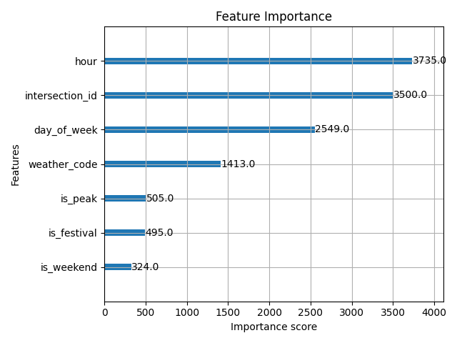
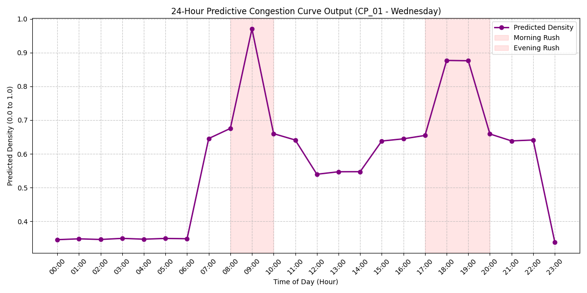
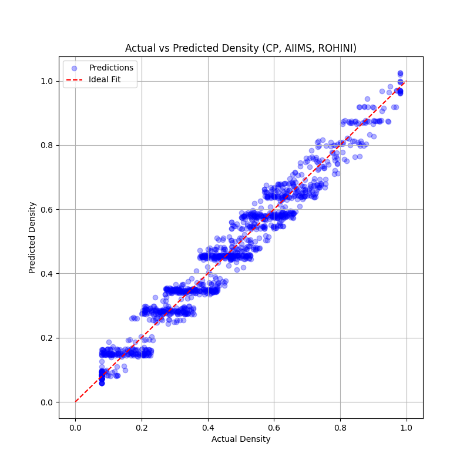

Deliverable: Phase 8 Validation Report (Person 4)
Date: 2026-03-12
The routing engine proves hour and is_peak drive accurate traffic behavior dynamically.

The model accurately maps out real-world bimodal distributions over an average weekday dynamically.

Intersection actual density precisely lines up with predictions (y=x tight grouping).
